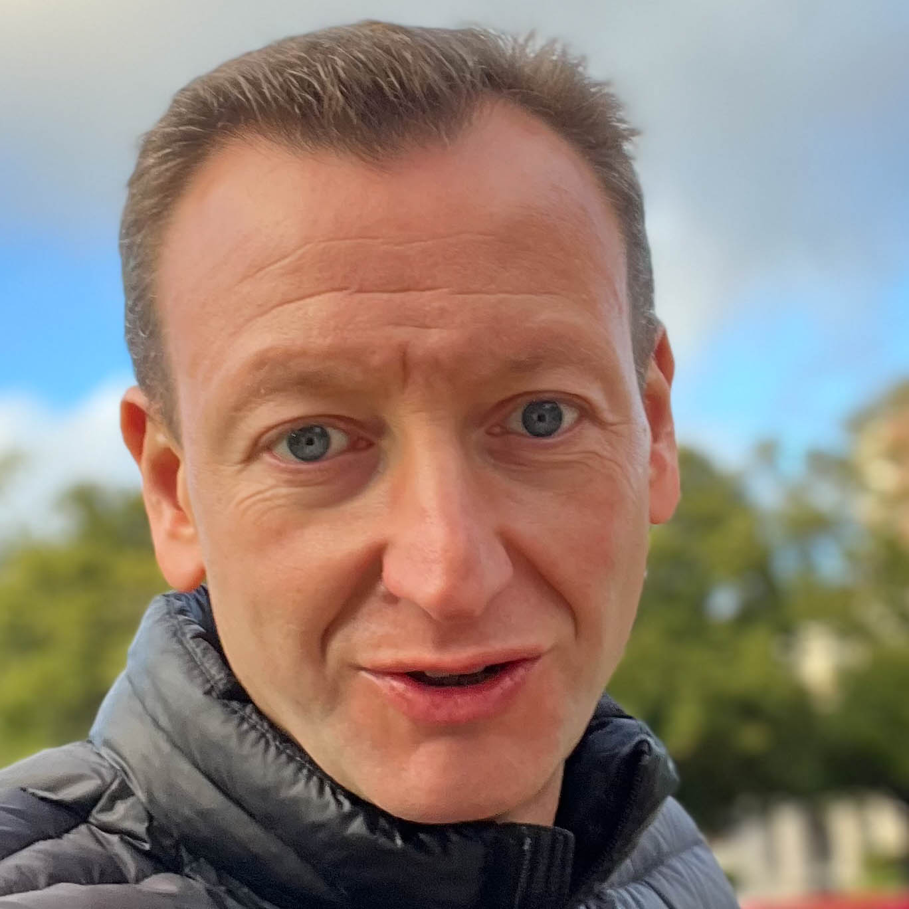

Alex Turkeltaub
Founder & Managing Partner
Alex founded JSL in 2020, recognizing the opportunity presented by the intersection of AI and healthcare. Prior to JSL, Alex founded Roam Analytics, a leading AI/NLP platform, and Frontier Strategy Group, an emerging markets data provider.